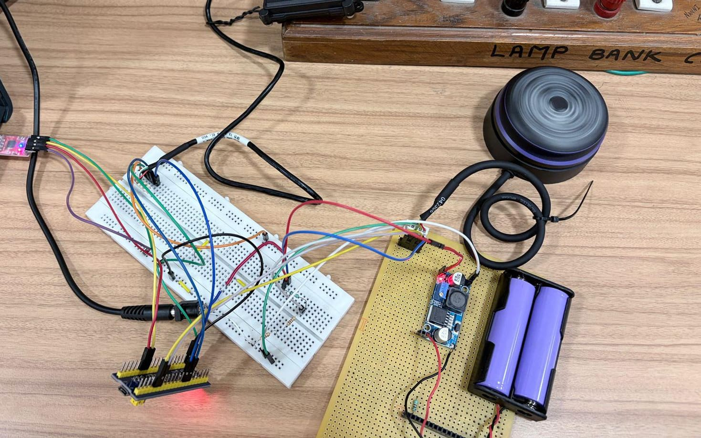
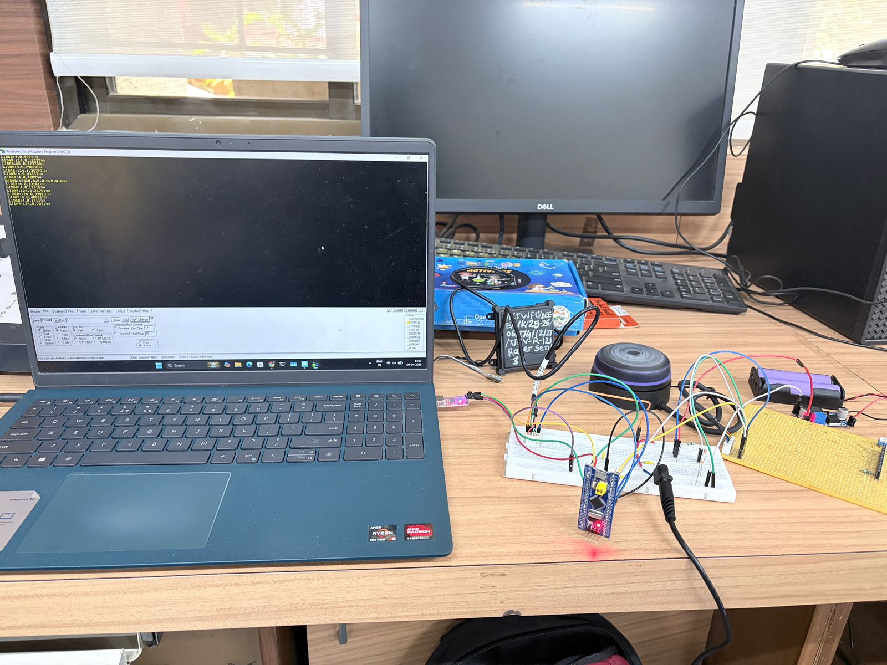

Project Overview
This project develops an embedded sensor fusion system using an STM32 microcontroller to combine LiDAR and Radar data for enhanced automotive safety. By merging high-resolution spatial mapping with long-range object detection, the system overcomes the limitations of single-sensor setups. The ECU processes real-time data to calculate Time-to-Collision (TTC) and trigger safety alerts. Finally, critical hazard data is transmitted across vehicle nodes via a CAN network and validated using a Unity 3D simulation environment
Key Features
Dual-Sensor Integration
Combines an A3M1 LiDAR for 360° mapping with an R121 Radar for long-range, all-weather tracking.
STM32 Processing
Utilizes an STM32 microcontroller and embedded C firmware for synchronized, real-time raw data decoding.
Sensor Fusion Algorithm
Merges data streams to minimize noise, eliminate single-sensor limitations, and improve environmental perception accuracy.
Predictive Collision Modeling
Implements a Time-to-Collision (TTC) model to calculate risks and trigger instant safety flags.
Deterministic CAN Communication
Uses standardized 8-byte data frames over a CAN network for high-speed, noise-immune data transmission.
Unity 3D Validation
Features a Unity-based simulation environment alongside DSO waveform analysis to replicate and verify real-world driving hazards.If
Technology Stack
Hardware
- Microcontroller: STM32 Series MCU
- Sensors: Slamtec RPLIDAR A3M1 (LiDAR) & R121 Radar module
- Hardware Interface: CAN transceiver nodes and UART serial connections
- Testing Equipment: Digital Storage Oscilloscope (DSO) for waveform analysis
Software & Tools
- Programming Language: Embedded C
- Firmware Framework: STM32 HAL/LL libraries or custom register-level drivers
- Simulation Engine: Unity 3D (For real-world scenario replication)
- Algorithmic Models: Sensor Fusion logic and Time-to-Collision (TTC) math models
Challenges & Solutions
Challenge: Single-sensor data streams suffer from environmental noise and accuracy limitations
Solution: Implemented continuous, synchronized UART communication handled by embedded C firmware.
Challenge: Acquiring data from two different sensors in real time causes timing mismatches
Solution: Implemented continuous, synchronized UART communication handled by embedded C firmware.
Challenge: LiDAR performance degrades significantly under poor lighting, rain, or foggy conditions
Solution: Integrated a long-range R121 Radar module to maintain robust detection in bad weather.
Challenge: Electrical noise in vehicles disrupts high-speed data transmission between nodes
Solution:Transmitted critical safety flags over a noise-immune, deterministic CAN protocol using 8-byte frames.
Challenge: Validating collision-avoidance logic in real vehicles presents significant safety hazards
Solution:Built a Unity-based 3D simulation environment to safely replicate and test driving scenarios.
Results & Impact
The platform successfully launched and has been serving thousands of customers. Key achievements include:
- Communication Stability: Established stable, synchronized UART and CAN communication that operates reliably under varying conditions.
- Accurate Data Decoding: Translated raw sensor streams into precise, actionable metrics for distance, angle, and object presence.
- Proactive Hazard Detection: Generated immediate blindspot and safety flags by successfully calculating risks via the Time-to-Collision model.
- Risk-Free Validation: Confirmed system logic and CAN waveform integrity safely using a Unity 3D simulator and DSO analysis.
- Modular Scalability: Created an efficient embedded framework that easily accommodates future upgrades like AI classification and extra sensors.
Key Learnings
This project developed core skills in aligning distinct LiDAR and Radar streams over synchronized STM32 UART channels. It provided hands-on expertise in vehicle networking by encoding safety metrics into deterministic, noise-immune 8-byte CAN frames. Additionally, it mastered the optimization of sensor fusion and Time-to-Collision (TTC) algorithms within resource-constrained embedded C firmware. Finally, it established proficiency in risk-free validation methodologies by mapping live ECU hardware outputs into a Unity 3D driving simulator.
Screenshots

